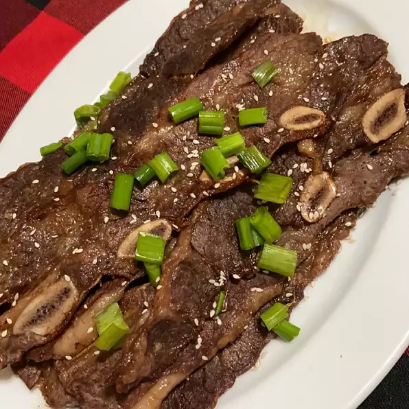

KBBQ Short Ribs

Description
This sweetly marinated short rib is delicious and tender. You will think you are in South Korea enjoying KBBQ all to yourself with this simple homemade dish.
Ingredients
- 3/4 Cup Soy Sauce
- 3/4 Cup Water
- 3 Tbsp White Vinegar
- 2 Tbsp Sesame Oil
- 1/2 Large Minced Onion
- 1/4 Cup Minced Garlic
- 1/4 Cup Dark Brown Sugar
- 2 Tbsp White Sugar
- 1 Tbsp Black Pepper
- 3 Pounds Korean Short Ribs
Directions
- Pour soy sauce, water, vinegar, and sesame oil into a large, non-metallic bowl. Whisk in onion, garlic, brown sugar, white sugar, and pepper, whisking until sugars dissolve. Submerge ribs in the marinade. Cover the bowl and refrigerate 7 to 12 hours; the longer, the better.
- Preheat an outdoor grill for medium-high heat.
- Remove ribs from marinade and shake off excess; discard marinade.
- Cook on the preheated grill until the meat is no longer pink, 5 to 7 minutes per side.